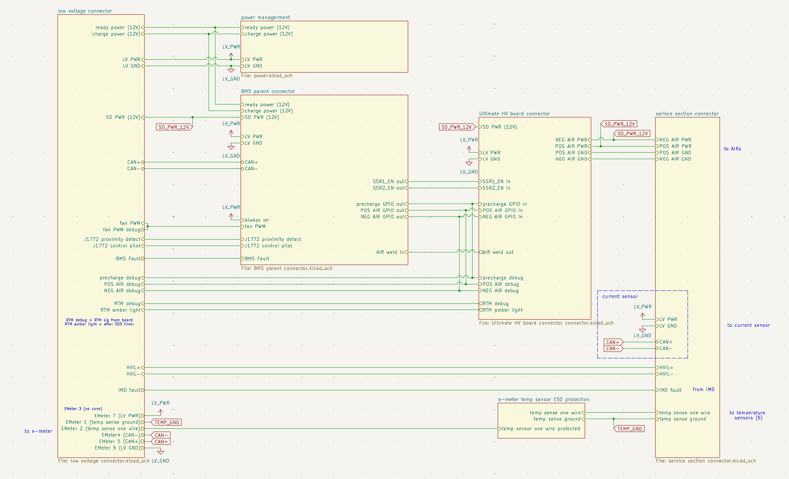
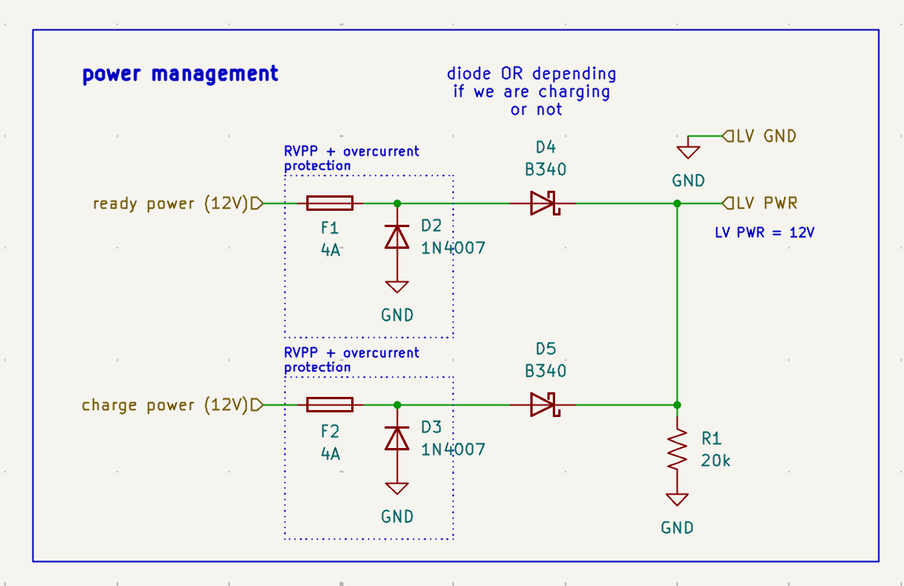

HV Isolated Backplane PCB
2026–27 Formula SAE EV
Low-voltage backplane for the accumulator electronics stack, designed to distribute power and route control, communication, safety, and debug signals between the BMS, HV Control Board, and service-section electronics while remaining isolated from tractive-system voltage.

Overview
The HV Isolated Backplane PCB forms the electrical interface between the control boards and external electronics in the accumulator. It sits at the base of the three-PCB electronics stack and provides a defined interconnect between the BMS Parent, HV Control Board, and components throughout the accumulator service section.
Although the boards connected to the backplane contain circuitry that interfaces directly with the 478.8 V tractive system, the backplane itself remains in the low-voltage domain. Signals from HV-referenced circuitry are isolated on their respective functional boards before reaching the backplane, so tractive-system voltage is not intentionally routed through it.
Moving these connections onto a PCB replaces a large amount of point-to-point wiring inside the accumulator. This creates a documented interface between subsystems and makes assembly, debugging, and future board revisions more repeatable.
Main functions
- 12 V low-voltage power distribution
- Shutdown-circuit power distribution
- CAN communication routing
- AIR and precharge control-signal routing
- AIR weld-detection and safety-signal routing
- HVIL and IMD signal routing
- Current-sensor and E-meter interfaces
- Temperature-sensor interface
- Debug and safety-light signal routing
System interconnect
The backplane connects several otherwise separate accumulator subsystems. The BMS Parent and HV Control Board plug into the electronics stack, while additional connectors provide interfaces to the service section, current sensor, E-meter, IMD, temperature sensors, and the vehicle low-voltage system.
The BMS provides control signals for the positive and negative AIRs, precharge, and AIR weld-detection circuitry. The backplane routes these signals to the HV Control Board and returns status and debug signals to the low-voltage system.
CAN, HVIL, IMD fault, temperature sensing, E-meter connections, fan control, and other vehicle interfaces are also consolidated through the board. Keeping these interfaces in one schematic makes the accumulator signal architecture explicit rather than distributing it across a large internal wiring harness.
Power management
The accumulator electronics can receive 12 V power from separate ready-power and charge-power sources depending on whether the vehicle is operating or charging. The backplane combines these sources into the common LV power rail used by the accumulator electronics.
Each 12 V input has independent overcurrent and reverse-polarity protection before the two sources are diode-ORed onto the LV power rail. The ORing diodes prevent either supply from backfeeding the other while allowing the electronics to be powered from the appropriate source in either operating state.

HV isolation architecture
A central design requirement is that the backplane can interconnect electronics associated with the tractive system without becoming part of the high-voltage domain itself.
Isolation is therefore handled on the functional boards at the point where signals cross between HV-referenced and LV-referenced circuitry. For example, HV-present and AIR weld-detection signals are isolated before being passed into the low-voltage system. Once these signals reach the backplane, they are already LV-referenced and can be routed alongside the other control interfaces.
This keeps the isolation boundary localized to the circuits that require it and allows the backplane to remain a low-voltage interconnect despite being physically located within the accumulator electronics assembly.
Design approach
The main challenge of the backplane is system integration rather than complex signal processing. Connector locations are constrained by the physical PCB stack, while the board must route a relatively large number of power, communication, control, safety, and debug signals between several different subsystems.
I developed the top-level schematic around the complete accumulator architecture rather than treating each connector independently. Signals are grouped by destination and function so the interfaces between the BMS, HV Control Board, service section, and external sensors remain clear.
The backplane also provides a single place to define connector pinouts and system-level net names. This reduces ambiguity during harness assembly and makes it easier to trace a signal from an external component through the electronics stack during debugging.